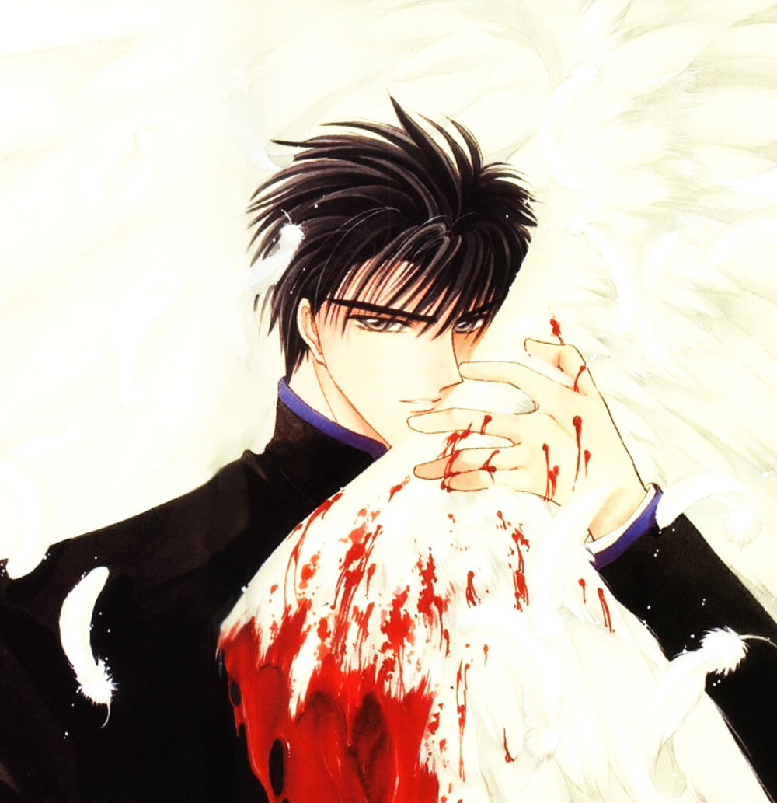

Sobre o projeto
Este é um projeto que iniciou de forma humorada, de uma fã incondicional do CLAMP que tem um sonho de se tornar escritora e ver seus queridos roteiros viajando em um novo terreno mental.
Vou usar este cantinho para postar tudo que vier na minha mente e que eu quiser comentar ou apenas expressar.